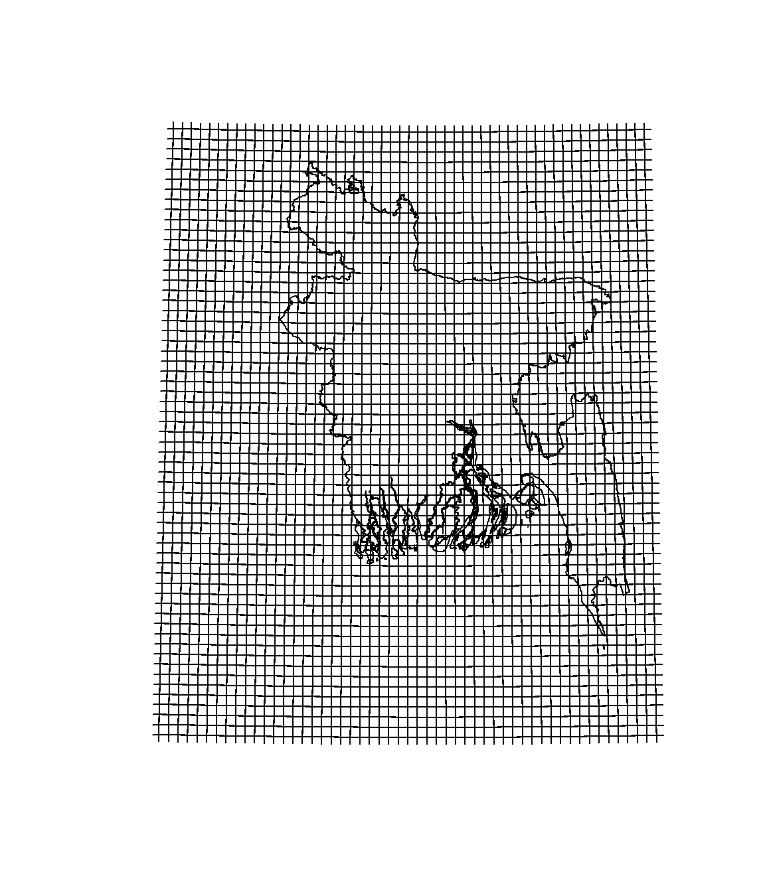
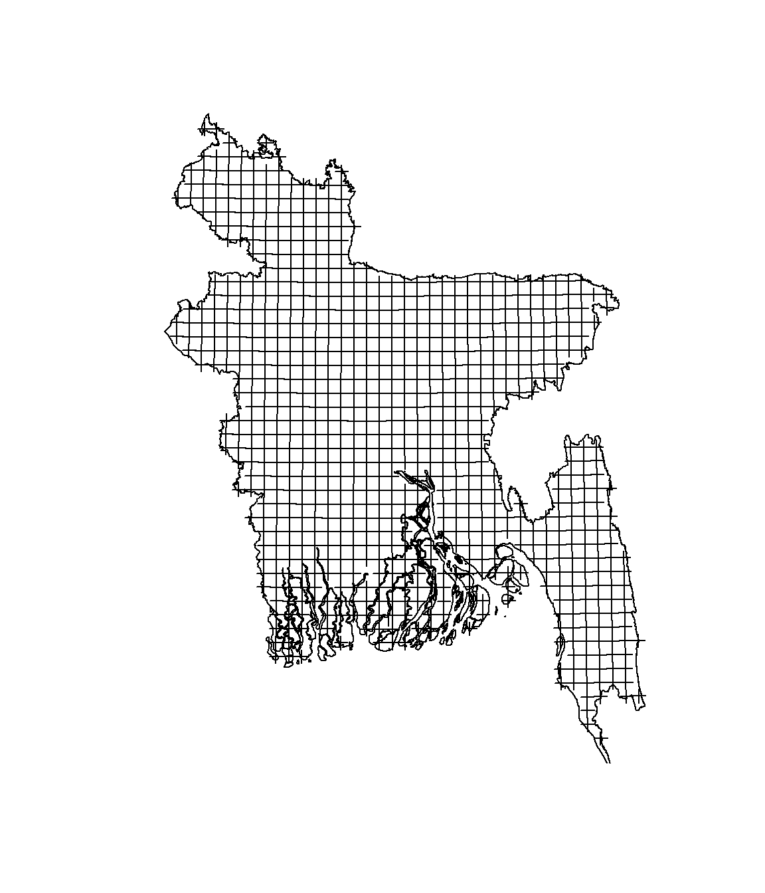

netCDF data processing in R
NetCDF (Network Common Data Form) is a set of software libraries and machine-independent data formats that support the creation, access, and sharing of array-oriented scientific data. It is also a community standard for sharing scientific data.
In this excercie we will use hourly weather data download from global atmospheric reanalysis ERA- Interim archive produced by European Centre for Medium-Range Weather Forecasts (ECMWF). This gridded data product includes a large variety of 3-hourly surface parameters and 6-hourly upper-air parameters covering the troposphere (Dee et al., 2011). We will process hourly data of average temperature for Bangladesh for the month of Januray to March for year 2015.
The data could avilable here for download. We used Pyhthon scrip for download data. Detail could be found here. The data used in this excersice could be available for download from here
We will use ncdf4 packge for processing netCDF data in R.
Load
library(ncdf4)
library(PCICt)
library(RNetCDF)
library(dplyr)
library(data.table)
library(tidyr)
library(reshape2)
library(stringr)
library(raster)Set working directory
dataFolder<-"D:\\Dropbox\\Spatial Data Analysis and Processing in R\\Data_NetCDF\\"Load netCDF file
nc <- nc_open(paste0(dataFolder,"data_fc_2015.nc"))
print(nc)## File D:\Dropbox\Spatial Data Analysis and Processing in R\Data_NetCDF\data_fc_2015.nc (NC_FORMAT_64BIT):
##
## 10 variables (excluding dimension variables):
## short parcs[longitude,latitude,time]
## scale_factor: 147.101399295012
## add_offset: 4819924.44930035
## _FillValue: -32767
## missing_value: -32767
## units: J m**-2
## long_name: Clear sky surface photosynthetically active radiation
## short par[longitude,latitude,time]
## scale_factor: 46.0887949582653
## add_offset: 1510145.45560252
## _FillValue: -32767
## missing_value: -32767
## units: J m**-2
## long_name: Photosynthetically active radiation at the surface
## short t2m[longitude,latitude,time]
## scale_factor: 0.000563963986894008
## add_offset: 291.025474853944
## _FillValue: -32767
## missing_value: -32767
## units: K
## long_name: 2 metre temperature
## short d2m[longitude,latitude,time]
## scale_factor: 0.000515991227702074
## add_offset: 282.454575988761
## _FillValue: -32767
## missing_value: -32767
## units: K
## long_name: 2 metre dewpoint temperature
## short ssr[longitude,latitude,time]
## scale_factor: 380.074115331207
## add_offset: 12453508.4629423
## _FillValue: -32767
## missing_value: -32767
## units: J m**-2
## long_name: Surface net solar radiation
## standard_name: surface_net_downward_shortwave_flux
## short e[longitude,latitude,time]
## scale_factor: 1.14049848751248e-07
## add_offset: -0.00341737326704554
## _FillValue: -32767
## missing_value: -32767
## units: m of water equivalent
## long_name: Evaporation
## standard_name: lwe_thickness_of_water_evaporation_amount
## short sund[longitude,latitude,time]
## scale_factor: 0.631596211546091
## add_offset: 20694.8814675192
## _FillValue: -32767
## missing_value: -32767
## units: s
## long_name: Sunshine duration
## short mx2t[longitude,latitude,time]
## scale_factor: 0.000545273349877161
## add_offset: 291.6391316602
## _FillValue: -32767
## missing_value: -32767
## units: K
## long_name: Maximum temperature at 2 metres since previous post-processing
## short mn2t[longitude,latitude,time]
## scale_factor: 0.000551550751386706
## add_offset: 290.586516216812
## _FillValue: -32767
## missing_value: -32767
## units: K
## long_name: Minimum temperature at 2 metres since previous post-processing
## short tp[longitude,latitude,time]
## scale_factor: 5.82932752846431e-07
## add_offset: 0.0191003745797662
## _FillValue: -32767
## missing_value: -32767
## units: m
## long_name: Total precipitation
##
## 3 dimensions:
## longitude Size:53
## units: degrees_east
## long_name: longitude
## latitude Size:61
## units: degrees_north
## long_name: latitude
## time Size:720 *** is unlimited ***
## units: hours since 1900-01-01 00:00:0.0
## long_name: time
## calendar: gregorian
##
## 2 global attributes:
## Conventions: CF-1.6
## history: 2017-02-20 12:32:41 GMT by grib_to_netcdf-2.1.0: grib_to_netcdf /data/data01/scratch/_mars-atls15-95e2cf679cd58ee9b4db4dd119a05a8d-OvGQNj.grib -o /data/data01/scratch/_grib2netcdf-atls05-95e2cf679cd58ee9b4db4dd119a05a8d-SvnlWs.nc -utimeExtract long & lat
lon <- ncvar_get(nc, "longitude")
lat <- ncvar_get(nc, "latitude")
station <- expand.grid(lon, lat)
colnames(station) <- c("Lon", "Lat")
station$StationName <- paste(station$Lon, station$Lat, sep = "_")
head(station)## Lon Lat StationName
## 1 86.500 27 86.5_27
## 2 86.625 27 86.625_27
## 3 86.750 27 86.75_27
## 4 86.875 27 86.875_27
## 5 87.000 27 87_27
## 6 87.125 27 87.125_27Extract year, date and time
iTime <- ncvar_get(nc, "time")
startDate <- "1900-01-01 00:00:0.0";
fTime <- as.PCICt(iTime*3600, cal = "gregorian", origin = startDate);
targetTime <- format(fTime, "%m")Create empty data-frame
out <- as.data.frame(matrix(nrow=length(targetTime), ncol = length(station$StationName) + 1))
colnames(out) <- c("Time", station$StationName)
out$Time <- format(fTime, "%m/%d/%Y %H:%M")Extract data (Temerature)
var <- ncvar_get(nc, "t2m")
var <- (var - 273.15) # Covert to Degree
input <- var
# Write variables in data frame
for (i in 1:length(station$StationName)) {
out[, station$StationName[i]] <- input[lon == station$Lon[i], lat == station$Lat[i] , ]
}Create daily data
inData<-out
uniqueDates <- unique(as.Date(inData[, 1], format = "%m/%d/%Y %R"));
stationNames <- colnames(inData)[-1];
outVar <- data.frame(matrix(nrow = length(uniqueDates), ncol = length(stationNames) + 1));
colnames(outVar) <- c("Time", stationNames);
outVar$Time <- uniqueDates;
for (uDate in 1:length(uniqueDates)) {
outVar[uDate, stationNames] <- apply(inData[as.Date(inData$Time, format = "%m/%d/%Y %R") == uniqueDates[uDate], stationNames], MARGIN = 2, FUN = mean, na.rm = TRUE);
}
head(outVar[,1:4])## Time 86.5_27 86.625_27 86.75_27
## 1 2015-01-01 16.29412 15.85004 15.40644
## 2 2015-01-02 15.85578 15.42773 14.99982
## 3 2015-01-03 15.11085 14.69324 14.27569
## 4 2015-01-04 13.07508 12.77287 12.47058
## 5 2015-01-05 11.77642 11.53546 11.29444
## 6 2015-01-06 11.22472 10.91637 10.60802Create daily spatial data
df<-t(outVar)
my.names <- df[1,]
colnames(df) <- my.names
df <- cbind(Log_Lat = rownames(df), df)
rownames(df) <- 1:nrow(df)
mf<-as.data.frame(df)
mf = mf[-1,]
lon_lat<-mf[,1]
lon_lat<-str_split_fixed(lon_lat, "_", 2)
lon_lat.df<-as.data.frame(lon_lat)
colnames(lon_lat.df) <- c("lon","lat")
data<-mf[2:92]
data_xy<-cbind(lon_lat.df,data)
my.data <- mutate_all(data_xy, function(x) as.numeric(as.character(x)))
head(my.data[,1:6])## lon lat 2015-01-01 2015-01-02 2015-01-03 2015-01-04
## 1 86.500 27 16.29412 15.85578 15.11085 13.07508
## 2 86.625 27 15.85004 15.42773 14.69324 12.77287
## 3 86.750 27 15.40644 14.99982 14.27569 12.47058
## 4 86.875 27 14.96244 14.57198 13.85829 12.16816
## 5 87.000 27 14.51844 14.14408 13.44067 11.86588
## 6 87.125 27 14.25531 13.82875 13.21692 11.74342Create a spatial point data.frame
xy<-my.data[1:2]
data<- my.data[-1:-2]
SPDF <- SpatialPointsDataFrame(coords=xy, data=data)
# define projection
proj4string(SPDF) <- CRS("+init=epsg:4326")
# repojection to BUTM
bd<-shapefile(paste0(dataFolder,"BD_Banladesh_BUTM.shp"))
BUTM<-proj4string(bd)
SPDF.proj<- spTransform(SPDF,BUTM)plot(SPDF.proj)
plot(bd, add=TRUE)
Cliping data with country boundary
bd.SPDF <-SPDF.proj[bd, ]
plot(bd.SPDF)
plot(bd, add=TRUE)
write as csv file
df.SPDF<-cbind.data.frame(bd.SPDF)
df.SPDF<-df.SPDF[,-94]
fwrite(df.SPDF, "t2m_spatial_2015.csv", row.names = F)